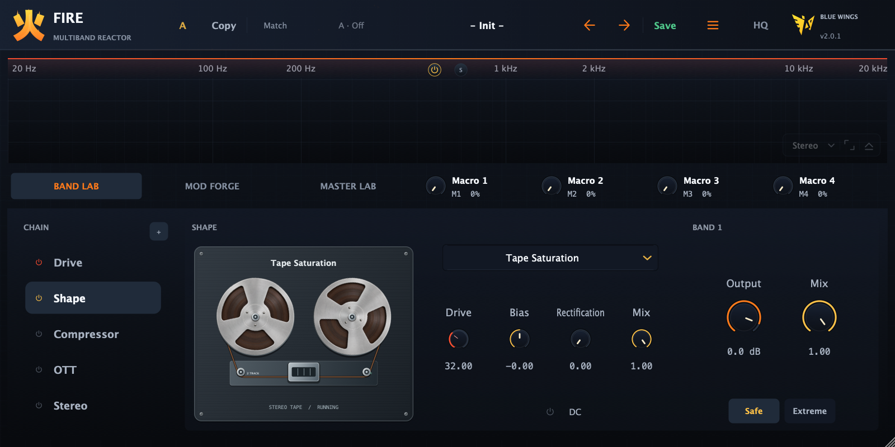
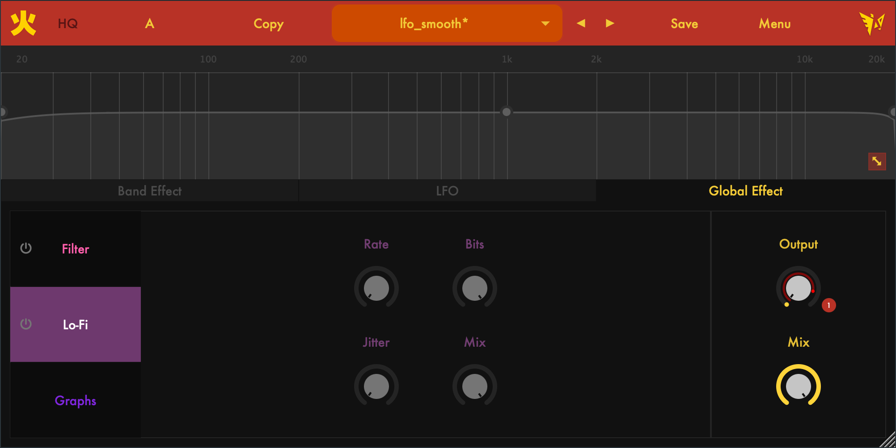

让每个频段，各有性格。
通过可调分频点划分音频，对每个频段独立进行失真处理。控制失真量、音色与干湿比例，把想要的质感，准确地放进合适的频率范围。
01 / SOUND SHAPING免费与开源
A CLOSER LOOK



THE INSTRUMENT
从一个频段开始，加一点失真，
再让调制带你去意料之外的地方。
通过可调分频点划分音频，对每个频段独立进行失真处理。控制失真量、音色与干湿比例，把想要的质感，准确地放进合适的频率范围。
四个可自定义 LFO，为参数带来持续变化。添加、移动或删除节点，调整曲线形状，再通过 Assign 模式点击旋钮，快速建立调制映射。
在频段效果中探索 Drive、Shape、Compressor 与 Stereo 模块，再用全局滤波和 Lo-Fi 处理，为声音增添另一层边缘与纹理。
通过 VST3 与 Audio Unit 格式，在兼容的宿主中继续创作。Fire 基于 JUCE 构建并开放源代码，欢迎音乐人的实验，也欢迎开发者共同改进。
THE IDEA BEHIND FIRE
失真可以是恰到好处的温暖，也可以是一种全新声音的起点。Fire 把频率、质感与动态放在一起，让你跟随耳朵，从一个轻微的改变，走向出乎意料的音色。
作为音乐人，也作为开发者，我希望这个工具能陪你找到：那个听起来真正属于自己的声音。
HEAR IT IN ACTION
通过视频认识 Fire 的界面、核心控制
与调制工作流。